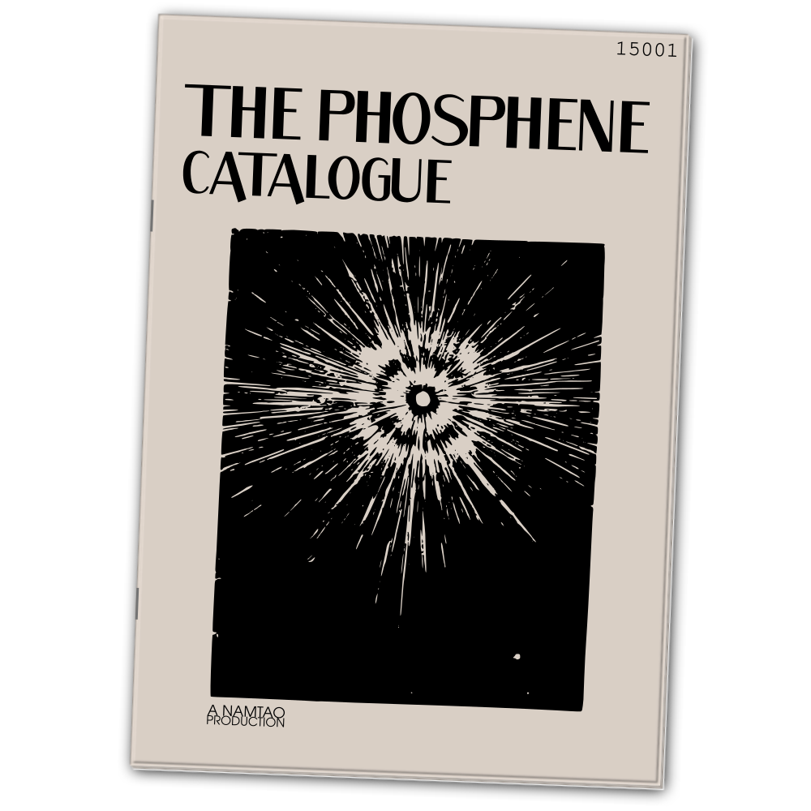

We see light where others see only darkness.
An urban fantasy podcast of tape recordings by the curator of a secretive London-based art auction house.
The Phosphene Catalogue is a 1970s mail-order catalogue, specialising in those items that cannot be sold at other auction houses: Paintings of lost origin, statues that are too grotesque for public display, and books better left unread...
Listen to the pilot here